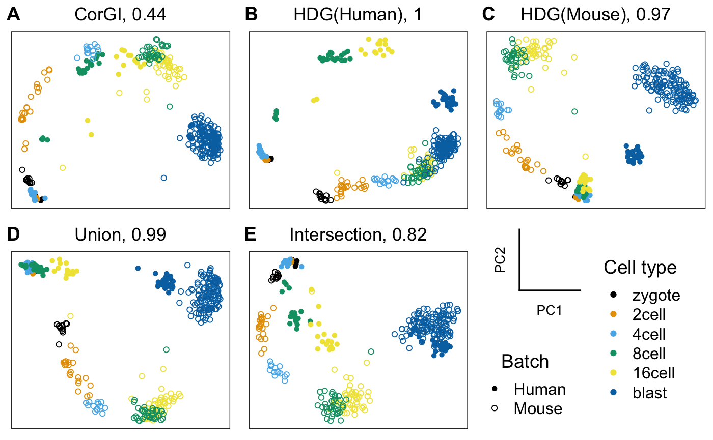
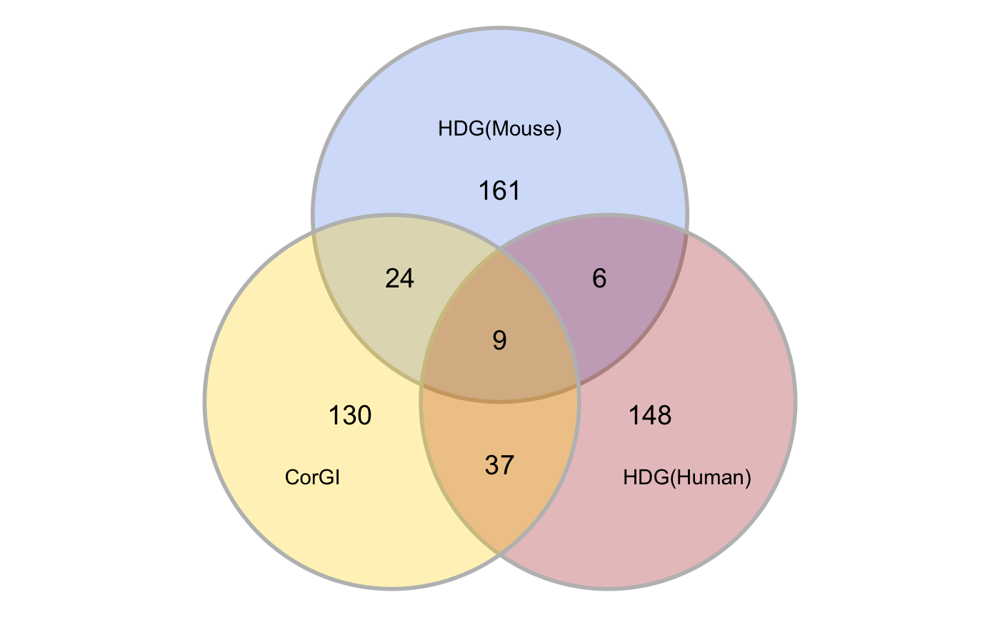
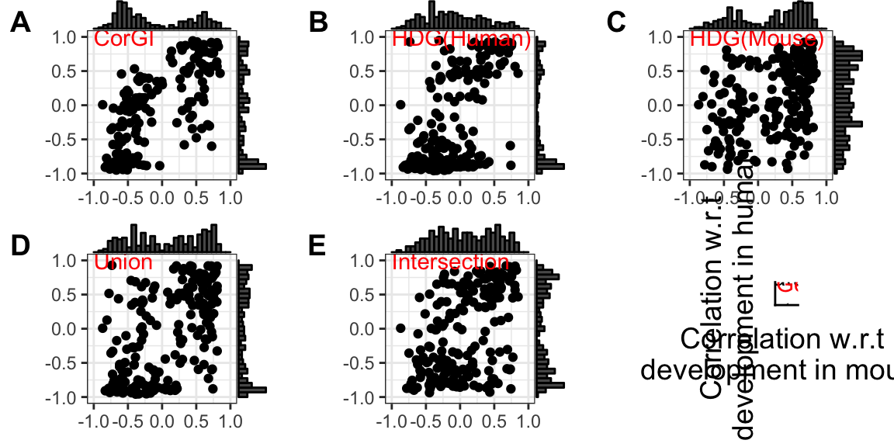
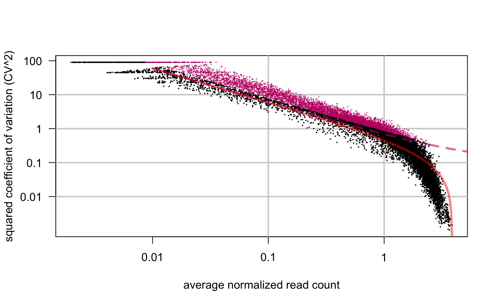
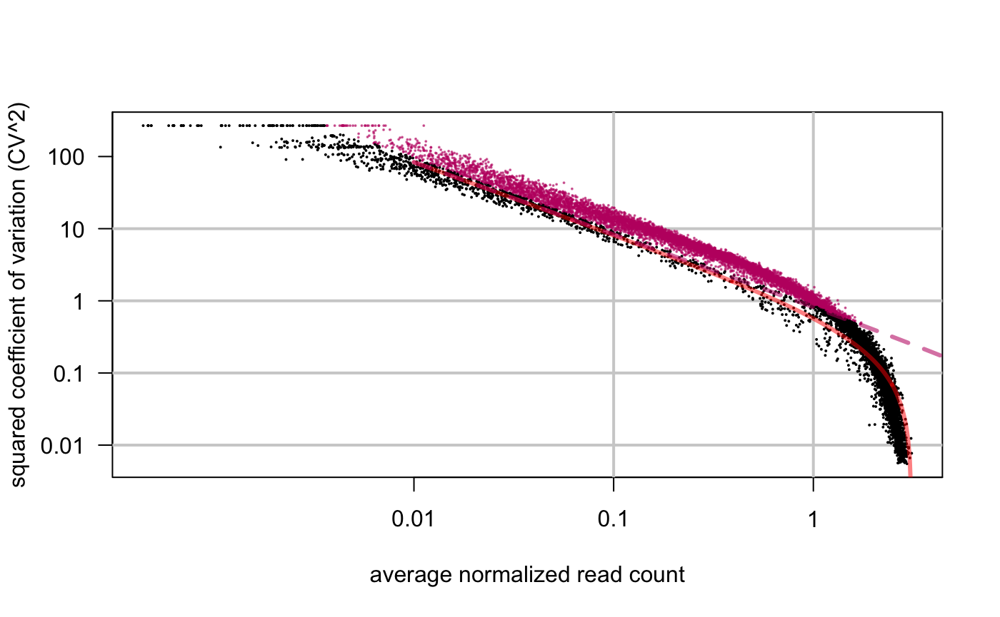
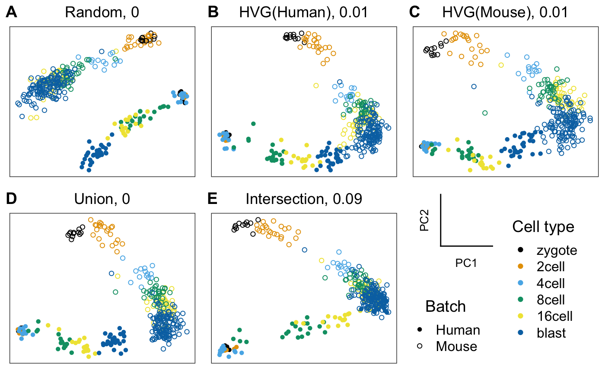

embryo-devel.RmdWe illustrate the CorGI feature selection method by analyzing datasets on human and mouse pre-implantation embryo development.
library(corgi)
library(ggplot2)
library(cowplot)
#> Warning: package 'cowplot' was built under R version 3.5.2
#>
#> Attaching package: 'cowplot'
#> The following object is masked from 'package:ggplot2':
#>
#> ggsave
library(scmap)
#> Warning: package 'scmap' was built under R version 3.5.2
#> Creating a generic function for 'toJSON' from package 'jsonlite' in package 'googleVis'
library(scran)
#> Warning: package 'scran' was built under R version 3.5.2
#> Loading required package: BiocParallel
#> Warning: package 'BiocParallel' was built under R version 3.5.2
#> Loading required package: SingleCellExperiment
#> Warning: package 'SingleCellExperiment' was built under R version 3.5.2
#> Loading required package: SummarizedExperiment
#> Warning: package 'SummarizedExperiment' was built under R version 3.5.1
#> Loading required package: GenomicRanges
#> Warning: package 'GenomicRanges' was built under R version 3.5.1
#> Loading required package: stats4
#> Loading required package: BiocGenerics
#> Warning: package 'BiocGenerics' was built under R version 3.5.1
#> Loading required package: parallel
#>
#> Attaching package: 'BiocGenerics'
#> The following objects are masked from 'package:parallel':
#>
#> clusterApply, clusterApplyLB, clusterCall, clusterEvalQ,
#> clusterExport, clusterMap, parApply, parCapply, parLapply,
#> parLapplyLB, parRapply, parSapply, parSapplyLB
#> The following objects are masked from 'package:stats':
#>
#> IQR, mad, sd, var, xtabs
#> The following objects are masked from 'package:base':
#>
#> anyDuplicated, append, as.data.frame, basename, cbind,
#> colMeans, colnames, colSums, dirname, do.call, duplicated,
#> eval, evalq, Filter, Find, get, grep, grepl, intersect,
#> is.unsorted, lapply, lengths, Map, mapply, match, mget, order,
#> paste, pmax, pmax.int, pmin, pmin.int, Position, rank, rbind,
#> Reduce, rowMeans, rownames, rowSums, sapply, setdiff, sort,
#> table, tapply, union, unique, unsplit, which, which.max,
#> which.min
#> Loading required package: S4Vectors
#> Warning: package 'S4Vectors' was built under R version 3.5.1
#>
#> Attaching package: 'S4Vectors'
#> The following object is masked from 'package:base':
#>
#> expand.grid
#> Loading required package: IRanges
#> Warning: package 'IRanges' was built under R version 3.5.1
#> Loading required package: GenomeInfoDb
#> Warning: package 'GenomeInfoDb' was built under R version 3.5.1
#> Loading required package: Biobase
#> Warning: package 'Biobase' was built under R version 3.5.1
#> Welcome to Bioconductor
#>
#> Vignettes contain introductory material; view with
#> 'browseVignettes()'. To cite Bioconductor, see
#> 'citation("Biobase")', and for packages 'citation("pkgname")'.
#> Loading required package: DelayedArray
#> Warning: package 'DelayedArray' was built under R version 3.5.1
#> Loading required package: matrixStats
#>
#> Attaching package: 'matrixStats'
#> The following objects are masked from 'package:Biobase':
#>
#> anyMissing, rowMedians
#>
#> Attaching package: 'DelayedArray'
#> The following objects are masked from 'package:matrixStats':
#>
#> colMaxs, colMins, colRanges, rowMaxs, rowMins, rowRanges
#> The following objects are masked from 'package:base':
#>
#> aperm, apply
library(M3Drop)
#> Warning: package 'M3Drop' was built under R version 3.5.2
#> Loading required package: numDerivWe download the data from the Hemberg Lab website. The human dataset is from Yan et al 2013 while the mouse dataset is from Deng et al 2014.
yan <- readRDS(url("https://scrnaseq-public-datasets.s3.amazonaws.com/scater-objects/yan.rds"))
deng <- readRDS(url("https://scrnaseq-public-datasets.s3.amazonaws.com/scater-objects/deng-reads.rds"))Get genes common to both datasets
rownames(yan) <- toupper(rownames(yan))
rownames(deng) <- toupper(rownames(deng))
shared_genes <- intersect(rownames(yan),rownames(deng))Get rid of the spike-in genes
Subset the data
Normalization
Metadata for the combined datasets
cell_type <- forcats::fct_c(as.factor(yan$cell_type1),as.factor(deng$cell_type1))
cell_type <- factor(cell_type, levels = c("zygote","2cell","4cell","8cell","16cell","blast"))
batch <- c(rep("Human",ncol(yan)),rep("Mouse",ncol(deng)))Wrapper around the qplot ggplot2::qplot function with our color scheme
my_color_palette <- c("#000000", "#E69F00", "#56B4E9", "#009E73", "#F0E442", "#0072B2", "#D55E00", "#CC79A7")
my_shape_palette <- c(16,1)
qplot <- function(...){
ggplot2::qplot(...) +
scale_color_manual(values = my_color_palette) +
scale_shape_manual(values = my_shape_palette)
}To use PCA, we first need to adjust the read-depth to be comparable across the two datasets
library(scran)
out <- multiBatchNorm(yan,deng,assay.type = "logcounts")
#> Warning in .batch_rescaler(batches, subset.row = nonspike.subset,
#> exprs_values = assay.type, : no size factors in batch 1, using sum of
#> counts instead
#> Warning in .batch_rescaler(batches, subset.row = nonspike.subset,
#> exprs_values = assay.type, : no size factors in batch 2, using sum of
#> counts instead
#> Warning in .get_all_sf_sets(object): spike-in set 'ERCC' should have its
#> own size factors
#> Warning in .get_all_sf_sets(object): spike-in set 'ERCC' should have its
#> own size factors
yan <- out[[1]]
deng <- out[[2]]
combined <- cbind(logcounts(yan),logcounts(deng))HDG_ranking <- function(sce){
rowData(sce)$feature_symbol <- rownames(sce)
sce <- scmap::selectFeatures(sce)
return(rownames(sce)[order(rowData(sce)[["scmap_scores"]],decreasing = T,na.last = T)])
}
gene_sets <- get_compared_gene_sets(
batch1_top_genes = HDG_ranking(yan),
batch1_name = "HDG(Human)",
batch2_top_genes = HDG_ranking(deng),
batch2_name = "HDG(Mouse)",
desired_size = length(corgi_gene_set)
)
#> Warning in linearModel(object, n_features): Your object does not contain
#> counts() slot. Dropouts were calculated using logcounts() slot...
gene_sets[["CorGI"]] <- corgi_gene_set
names(gene_sets)
#> [1] "HDG(Human)" "HDG(Mouse)" "Union" "Intersection"
#> [5] "CorGI"Reorder the gene sets
gene_sets <- gene_sets[c(5,1,2,3,4)]
lapply(gene_sets, length)
#> $CorGI
#> [1] 200
#>
#> $`HDG(Human)`
#> [1] 200
#>
#> $`HDG(Mouse)`
#> [1] 200
#>
#> $Union
#> [1] 200
#>
#> $Intersection
#> [1] 200embeddings_pca <-
lapply(
X = gene_sets,
FUN = function(gene_set) {
prcomp(t(combined[gene_set,]),rank. = 2)$x
}
)emb_name <- "PC"
embeddings <- embeddings_pca
get_scatterplots(embeddings,
as.factor(batch),
cell_type) -> dr_plots
plot_grid(
plot_grid(
get_axes_legend(emb_name),
get_shape_legend(batch, my_shape_palette), nrow = 2
),
get_color_legend(cell_type, my_color_palette,ncol = 1),
nrow = 1) -> legends
dr_plots[[length(dr_plots)+1]] <- legends
dr_plots[["nrow"]] <- 2
dr_plots[["labels"]] <- c("A","B","C","D","E","")
do.call(plot_grid,dr_plots) -> top_panel
top_panel
ggsave(filename = "embryo_devel_PCA_HDG.eps",device = "eps",plot = top_panel,path = "~/CorGI_figures/embryo_devel",width = 6,height = 4)library(ggforce)
library(limma)
#> Warning: package 'limma' was built under R version 3.5.1
#>
#> Attaching package: 'limma'
#> The following object is masked from 'package:BiocGenerics':
#>
#> plotMA
library(dplyr)
#>
#> Attaching package: 'dplyr'
#> The following object is masked from 'package:matrixStats':
#>
#> count
#> The following object is masked from 'package:Biobase':
#>
#> combine
#> The following objects are masked from 'package:GenomicRanges':
#>
#> intersect, setdiff, union
#> The following object is masked from 'package:GenomeInfoDb':
#>
#> intersect
#> The following objects are masked from 'package:IRanges':
#>
#> collapse, desc, intersect, setdiff, slice, union
#> The following objects are masked from 'package:S4Vectors':
#>
#> first, intersect, rename, setdiff, setequal, union
#> The following objects are masked from 'package:BiocGenerics':
#>
#> combine, intersect, setdiff, union
#> The following objects are masked from 'package:stats':
#>
#> filter, lag
#> The following objects are masked from 'package:base':
#>
#> intersect, setdiff, setequal, union
df.venn <- data.frame(x = c(0, 0.866, -0.866),
y = c(1, -0.5, -0.5),
labels = c('CorGI', 'HDG(Human)', 'HDG(Mouse)'))
all_genes <- Reduce(union, gene_sets[1:3])
names(gene_sets)[1:3]
#> [1] "CorGI" "HDG(Human)" "HDG(Mouse)"
mydata <-
data.frame(CorGI = all_genes %in% gene_sets[["CorGI"]],
`HDG(Human)` = all_genes %in% gene_sets[["HDG(Human)"]],
`HDG(Mouse)` = all_genes %in% gene_sets[["HDG(Mouse)"]])
vdc <- vennCounts(mydata)
class(vdc) <- 'matrix'
df.vdc <- as.data.frame(vdc)[-1,] %>%
mutate(x = c(0, 1.2, 0.8, -1.2, -0.8, 0, 0),
y = c(1.2, -0.6, 0.5, -0.6, 0.5, -1, 0))
df.gene_set_names <-
df.vdc[c(1,2,4),4:6]
df.gene_set_names
#> Counts x y
#> 1 161 0.0 1.2
#> 2 149 1.2 -0.6
#> 4 133 -1.2 -0.6
df.gene_set_names$Name <- c("HDG(Mouse)","HDG(Human)","CorGI")
df.gene_set_names$y[1] <- df.gene_set_names$y[1] + 0.5
df.gene_set_names$y[2:3] <- df.gene_set_names$y[2:3] -0.5
df.gene_set_names$x[2:3] <- df.gene_set_names$x[2:3]*1.25
ggplot(df.venn) +
geom_circle(aes(x0 = x, y0 = y, r = 1.5, fill = labels), alpha = .3, size = 1, colour = 'grey') +
coord_fixed() +
theme_void() +
theme(legend.position = 'none') +
scale_fill_manual(values = c('cornflowerblue', 'firebrick', 'gold')) +
scale_colour_manual(values = c('cornflowerblue', 'firebrick', 'gold'), guide = FALSE) +
labs(fill = NULL) +
annotate("text", x = df.vdc$x, y = df.vdc$y, label = df.vdc$Counts, size = 5)+
annotate("text", x = df.gene_set_names$x, y = df.gene_set_names$y, label = df.gene_set_names$Name) ->
venn_diagram
venn_diagram
ggsave(filename = "venn_diagram_HDG.eps",device = "eps",plot = venn_diagram,path = "~/CorGI_figures/embryo_devel",width = 4,height = 4)
#> Warning in grid.Call.graphics(C_polygon, x$x, x$y, index): semi-
#> transparency is not supported on this device: reported only once per page# plts <- list()
lapply(names(gene_sets)[1:3],function(gs_name){
gene_set <- gene_sets[[gs_name]]
cbind(
cor(t(combined[gene_set,
batch == "Mouse"]),
as.numeric(cell_type[batch == "Mouse"]),
method = "spearman"),
cor(t(combined[gene_set,
batch == "Human"]),
as.numeric(cell_type[batch == "Human"]),
method = "spearman")) %>%
data.frame(stringsAsFactors = F) ->
corr_wrt_devel
colnames(corr_wrt_devel) <- c("Mouse","Human")
corr_wrt_devel$Gene_set <- gs_name
corr_wrt_devel
}) -> dfs
#> Warning in cor(t(combined[gene_set, batch == "Mouse"]),
#> as.numeric(cell_type[batch == : the standard deviation is zero
#> Warning in cor(t(combined[gene_set, batch == "Human"]),
#> as.numeric(cell_type[batch == : the standard deviation is zero
reshape2::melt(rbind_list(dfs)) -> df
#> Warning: 'rbind_list' is deprecated.
#> Use 'bind_rows()' instead.
#> See help("Deprecated")
#> Using Gene_set as id variables
colnames(df) <- c("Gene_set", "Species","Corr")
head(df)
#> Gene_set Species Corr
#> 1 CorGI Mouse -0.6449947
#> 2 CorGI Mouse -0.6686111
#> 3 CorGI Mouse -0.7282891
#> 4 CorGI Mouse -0.6608965
#> 5 CorGI Mouse -0.6437593
#> 6 CorGI Mouse -0.5734754
df %>%
ggplot(aes(x = Gene_set, y = Corr, fill=Species)) +
geom_violin(adjust = .5) +
theme(legend.position = "bottom",axis.title.x = element_blank()) + ylab("Correlation with\n developmental stage")-> corr_violin
# reshape2::melt(rbind_list(dfs[[1]])) plot_grid(venn_diagram,corr_violin, rel_heights = c(1,3)) -> bottom_panel
#> Warning: Removed 2 rows containing non-finite values (stat_ydensity).# plts <- list()
lapply(gene_sets,function(gene_set){
cbind(
cor(t(combined[gene_set,
batch == "Mouse"]),
as.numeric(cell_type[batch == "Mouse"]),
method = "spearman"),
cor(t(combined[gene_set,
batch == "Human"]),
as.numeric(cell_type[batch == "Human"]),
method = "spearman")) ->
corr_wrt_devel
qplot(corr_wrt_devel[,1],
corr_wrt_devel[,2],
xlim = c(-1,1),
ylim = c(-1,1))
}) -> plts
#> Warning in cor(t(combined[gene_set, batch == "Mouse"]),
#> as.numeric(cell_type[batch == : the standard deviation is zero
#> Warning in cor(t(combined[gene_set, batch == "Human"]),
#> as.numeric(cell_type[batch == : the standard deviation is zero
#> Warning in cor(t(combined[gene_set, batch == "Mouse"]),
#> as.numeric(cell_type[batch == : the standard deviation is zero
#> Warning in cor(t(combined[gene_set, batch == "Human"]),
#> as.numeric(cell_type[batch == : the standard deviation is zerolapply(X = names(plts),FUN = function(gs_name){
p <- plts[[gs_name]]
p +
xlab("Mouse") +
ylab("Human") +
ggtitle(gs_name) +
theme_bw() +
theme(
axis.title = element_blank()
) +
coord_fixed()
ggExtra::ggMarginal(p+
xlab(NULL) +
ylab(NULL) +
theme_bw() +
coord_fixed() +
annotate("text",
x = -1,
y = 1,
label = gs_name,
hjust = 0,
color = "red") +
theme(plot.title = element_text(vjust = 1)),
type = "histogram")
}) -> histograms
#> Warning: Removed 1 rows containing missing values (geom_point).
#> Warning: Removed 1 rows containing missing values (geom_point).
#> Warning: Removed 2 rows containing missing values (geom_point).
histograms[[6]] <-
qplot(iris[, 1], iris[, 2], shape = NA, na.rm = TRUE,xlim = c(-1,1),
ylim = c(-1,1)) +
xlab("Correlation w.r.t \ndevelopment in mouse")+
ylab("Correlation w.r.t \ndevelopment in human")+
# theme_bw() +
theme(
# axis.title = element_blank(),
axis.ticks = element_blank(),
axis.text = element_blank(),
plot.margin=unit(c(1,1,1,1),"cm")
) +
annotate("text",
x = 0,
y = 0,
label = "Each scatter point \nrepresents a gene",
hjust = 0.5,
vjust = 0.5)+
annotate("text",
x = -1,
y = 1,
label = "Gene set name",
hjust = 0,
vjust = 0.5,
color = "red")+
coord_fixed()
histograms[["labels"]] <- c(LETTERS[1:5],"")
do.call(plot_grid,histograms) -> devel_plt
devel_plt
gene_sets <- get_compared_gene_sets(
batch1_top_genes = BrenneckeGetVariableGenes(logcounts(yan)),
batch1_name = "HVG(Human)",
batch2_top_genes = BrenneckeGetVariableGenes(logcounts(deng)),
batch2_name = "HVG(Mouse)",
desired_size = length(corgi_gene_set)
)
#> Warning in glmgam.fit(cbind(a0 = 1, a1tilde = 1/meansSp[useForFit]),
#> cv2Sp[useForFit]): Too much damping - convergence tolerance not achievable
#> Warning in xy.coords(x, y, xlabel, ylabel, log): 352 x values <= 0 omitted
#> from logarithmic plot
#> Warning in xy.coords(x, y, xlabel, ylabel, log): 115 x values <= 0 omitted
#> from logarithmic plot
gene_sets[["CorGI"]] <- corgi_gene_set
names(gene_sets)
#> [1] "HVG(Human)" "HVG(Mouse)" "Union" "Intersection"
#> [5] "CorGI"Reorder the gene sets
gene_sets <- gene_sets[c(5,1,2,3,4)]
lapply(gene_sets, length)
#> $CorGI
#> [1] 200
#>
#> $`HVG(Human)`
#> [1] 200
#>
#> $`HVG(Mouse)`
#> [1] 200
#>
#> $Union
#> [1] 200
#>
#> $Intersection
#> [1] 200
gene_sets[[1]] <- sample(shared_genes,length(gene_sets[[1]]))
names(gene_sets)[1] <- "Random"embeddings_pca <-
lapply(
X = gene_sets,
FUN = function(gene_set) {
prcomp(t(combined[gene_set,]),rank. = 2)$x
}
)emb_name <- "PC"
embeddings <- embeddings_pca
get_scatterplots(embeddings,
as.factor(batch),
cell_type) -> dr_plots
plot_grid(
plot_grid(
get_axes_legend(emb_name),
get_shape_legend(batch, my_shape_palette), nrow = 2
),
get_color_legend(cell_type, my_color_palette,ncol = 1),
nrow = 1) -> legends
dr_plots[[length(dr_plots)+1]] <- legends
dr_plots[["nrow"]] <- 2
dr_plots[["labels"]] <- c("A","B","C","D","E","")
do.call(plot_grid,dr_plots) -> top_panel
top_panel